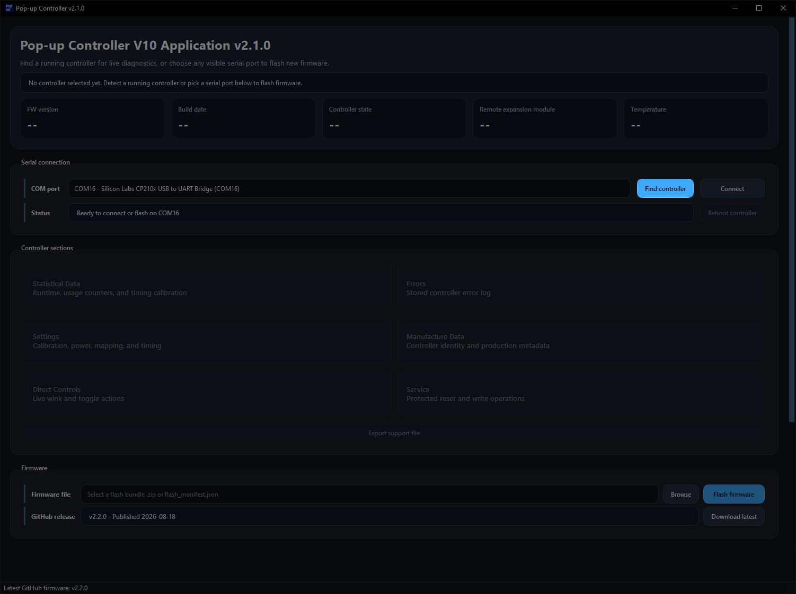
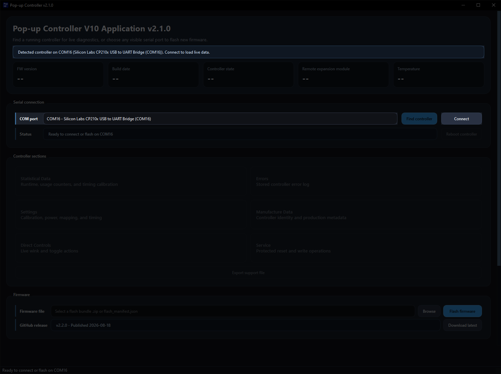
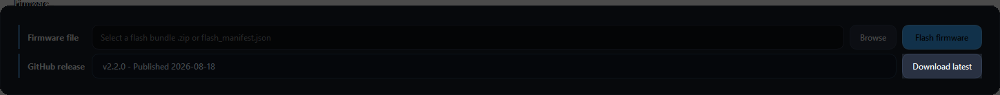
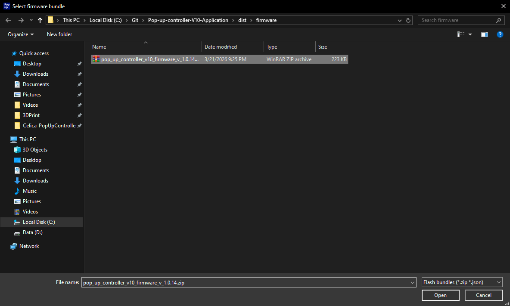
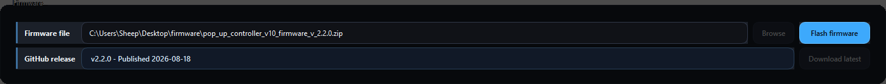
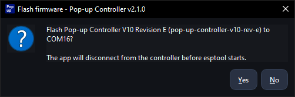
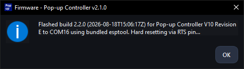
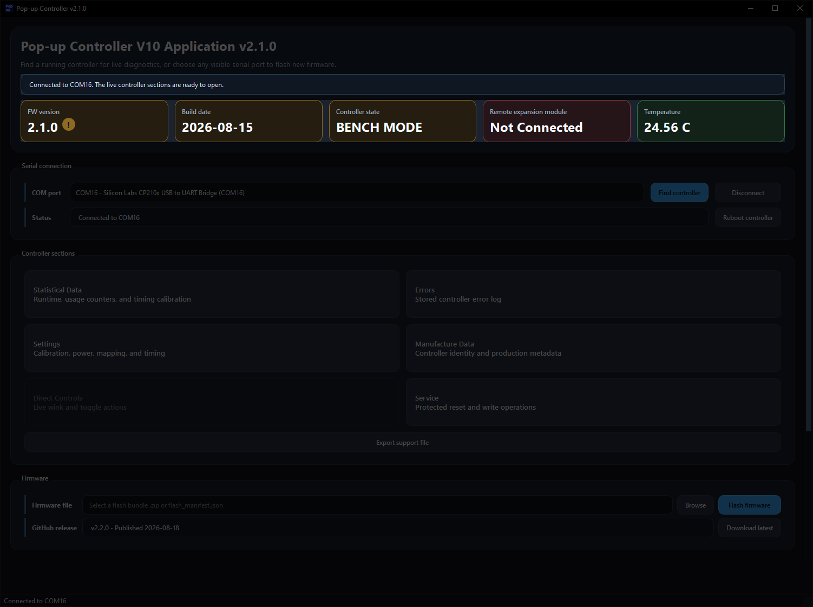

What You Need
- The latest desktop app release for Windows.
- A USB-C cable that supports data transfer.
- A Pop-up Controller V10 of any hardware revision.
- A Windows 10 or Windows 11 PC.
Flash firmware to a Pop-up Controller V10 by using the Windows desktop app, either with the controller connected directly to your PC or while it is installed in the car.
A few quick checks will make the flashing process smoother and help avoid false connection problems.
Use this quick summary to jump to the part you need. Most users will use Step 4. Use Step 5 instead if you already have a firmware .zip file.
Launch the app and continue past any Windows warning.
2Ask the app to search for the connected controller.
3Confirm that the controller information appears in the app.
4Let the app fetch and select the newest firmware release automatically.
5Use this manual option if you already downloaded a specific firmware package.
6Begin writing the selected firmware to the controller.
7Approve the confirmation dialog before the firmware is written.
8Let the flash finish and wait for the success message.
9Check that the controller reconnects and the displayed information looks correct.
Follow the sequence below. Each screenshot matches the step immediately above it.
Double-click the extracted .exe file to start the app.
Windows SmartScreen or antivirus software may warn you about the app because it is not code-signed.
The main window should open. Click Find controller.

Give the app a few seconds to detect the controller and update the device information.

Click Download latest to automatically download and select the newest firmware file.

If needed, click Browse instead and select a firmware .zip file manually.

After the firmware file has been loaded, click Flash firmware to begin the process.

When the app asks for confirmation, click Yes.

After about 5 to 10 seconds, the flash should finish and a success dialog should appear.

A few seconds later, the controller should reconnect automatically. Check that the displayed information looks correct.
